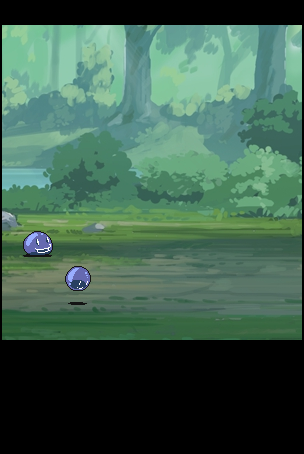

はじめに
作ったものをぞろぞろ乗っけてる万屋サイトですん。web開発勉強がてらホームページつくってやす！
開発進捗
RPGクリッカー
クッキークリッカーをリスペクトして、RPGクリッカー(仮)なるものを作ってます。2017/07/28現在の進捗
cssとhtmlの表示周りだけでいっぱいいっぱいだべさ...。とりあえず、見た目だけある程度作ったから、中身の関数作っていくよー。▽ゲーセンに行ったよ。 2017/07/28
ちゃんとした文章を書くのが１年ぶりくらいだと思う。そもそも「自分の何気ない一日」を表すのがとても苦手な性格なもんで、 雑談すらまともにままならないんです最近。この日記を機に雑談をうまくしたい今日この頃。久しぶりにゲームセンター行ったよ。本格的にゲーセンで活動してた時期が３～４年前だったから、音ゲーコーナーの内容があまりにも違ってて驚いたよね。SEGAの音ゲーが幅めっちゃ利かせてた。
だってさ、だってさ、昔の音ゲーコーナーって９割がKONAMIの音ゲーで、ほかの会社の音ゲーって太鼓の達人を除いて隅っこで細々と稼働してるくらいだったじゃん。誤解を恐れずにもっと言うと、KONAMIの音ゲーは「ガチ」他社の音ゲーは「お遊び」みたいな風潮が、なんとなあく漂っていたような気がする。
そういう事情を踏まえると、konamiとsegaの音ゲーの台数が半々くらいになってる現状に正直驚いたよね！プレイ人数とか勢い的には、SEGAのほうに軍配が上がってるようにも見えた。本当すごいよね。
SEGAゲー人気の理由を調べたら、どうやらソーシャルメディアで生きてきた層を捕まえるのが上手かったみたいだね。KONAMIの音ゲーって、jubeatが出るまで、基本的に版権曲がネットで広まって、その曲の良さに惹かれて音ゲー始める人が多かったんだけど、SEGAの音ゲーは別で、アニソンとかネットで流行った曲を充実させることで、着実にネットユーザーを吸収してるみたい。
プレイしているユーザー見てみると、KONAMI側は年齢層高めで、SEGA側は高校生とか大学生とか年齢層若めだった。これって所謂音ゲーの世代交代なのかなあって思った。感覚的には時代がハロプロから48Gに移行した時とか、ポケモンから妖怪ウォッチに移行した時と同じような感覚。やばい、年齢ばれそう。
オリジナル曲の質の高さを入口とする、「元祖音ゲー」KONAMIの音ゲーと、版権曲やソーシャルメディア曲を入口とする「新進気鋭」SEGAの音ゲー。 これからどっちが覇権を握ってくか見ものですな。。。個人的には共存していってほしいのが本音だけど！
ちなみに自分はポップンと寺がメインです。チュウニズムも楽しそうだったからやってみたい！
 Follow @sosaija
Follow @sosaija